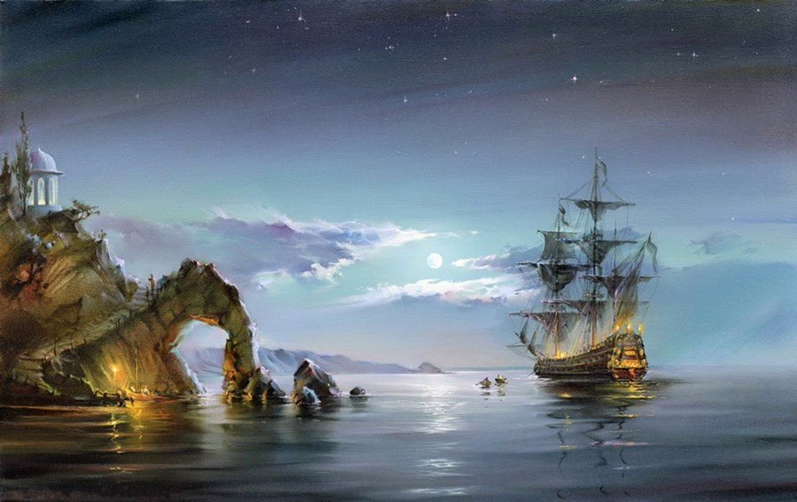
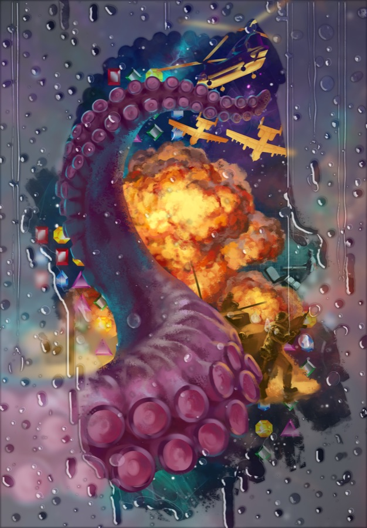
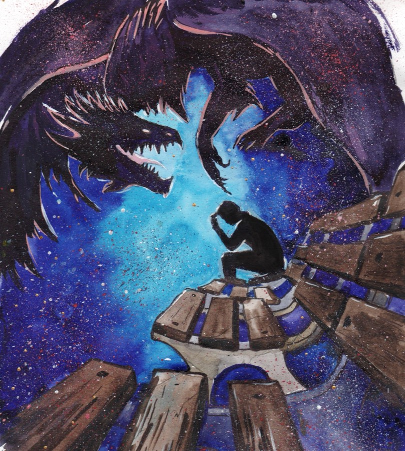

Сергей Гостов · истории и сборники
Миры,
которые открываются строкой.
Здесь можно сразу выбрать рассказ и читать его целиком. Обложки — из настоящих сборников; за ними истории о людях, страхе, выборе и странных возможностях.


СБОРНИКИ / ОТДЕЛЬНЫЕ ИСТОРИИЧИТАТЬ ОНЛАЙН ↓
Начать с одногоОткрой любую.
Открой любую.
Дальше решишь сам.
Короткие истории для разных настроений. Нажми на обложку — откроется полный текст на сайте.

СОЛЯНОЧКА / 1192 СЛОВА
Материнская плата
Читать
ТРИ ИЗНУТРИ / 1642 СЛОВА
Не потеряйся
Читать
СОЛЯНОЧКА / 1685 СЛОВ
Летуны
ЧитатьИллюстрации обложек — Bizi.
Полная библиотека
Все рассказы
Три сборника, двадцать три истории. Каждую можно открыть и прочитать целиком.
2018 / 7 историй
Соляночка
Истории из сборника
2019 / 9 историй
Три изнутри
Истории из сборника

2020 / 7 историй
А потом наступит счастье
Истории из сборника
Иллюстрации обложек — Bizi.